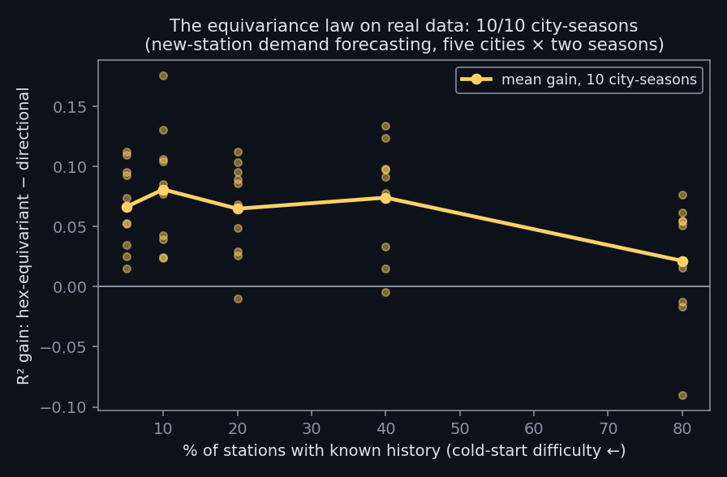

← research · playground · the six-year story · code & logs
Equivariant models pay exactly when the symmetry is genuinely present and data is scarce — demonstrated on new-station demand forecasting across five cities and two seasons: 10 out of 10 city-seasons.

Cold-start forecasting — predicting demand at a brand-new station with zero history, from neighbours only — makes the spatial operator the whole model, which is exactly where an equivariant inductive bias should pay. On real bike-share data (point-level trips aggregated to a dense hex grid), a hex-equivariant model was compared against a directional (anisotropic) model at matched parameters across NYC, Chicago, DC, Boston and San Francisco, winter and summer.
Cold-start-safe construction throughout: no centre tap, global standardisation (no per-cell leakage), held-out stations as the test. The law's other half was confirmed elsewhere with mismatch controls: when the symmetry is absent or only approximate, hard equivariance hurts — knowing both edges of the regime is the result.
Part of a ~30-experiment program run under one hard rule: no result is recorded before its run completes. Methods and logs: github.com/dwatces.